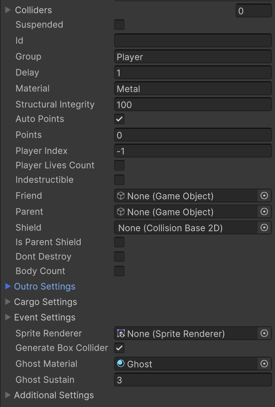

Pyro / CollisionState
Namespace
Playniax.PyroInherits from
CollisionBase2DScript can be found in
Assets/Playniax/Framework/Pyro/Engine/Collisions 2D/Scripts (MonoBehaviour)/CollisionState.cs
Class CollisionState
DescriptionCollision properties.
| Public fields | Description |
|---|
bool autoPoints = true | Determines if points are automatically set by multiplying structuralIntegrity by 10 (default value 10 can be changed by setting 'autoPointsMultiplier') |
int playerIndex = -1 | Determines what player is rewarded.
-1 does nothing but anything above -1 adds the points of an object destroyed to the player the index is set to.
For example if playerIndex = 0 the points will be rewarded to player 1. playerIndex = 1 and the points will be rewarded to player 2 etc.
To get the points you can do something like: PlayerData.Get(0).score |
OutroSettings outroSettings = new OutroSettings() | Outro Settings. |
CargoSettings cargoSettings = new CargoSettings() | Cargo Settings. |
EventSettings eventSettings = new EventSettings() | Event Settings. |
SpriteRenderer spriteRenderer | SpriteRenderer to use. |
bool generateBoxCollider = true | Determines if a BoxCollider should be created automatically when a collider is missing. |
Class CollisionState.CargoSettings
DescriptionCargo is released when an object is destroyed.
| Public fields | Description |
|---|
GameObject[] prefab = new GameObject[0] | The list of cargo objects. |
float scale = 1 | Determines the scale of cargo objects. |
Class CollisionState.EventSettings
DescriptionOutro Settings determine what effect to play when an object is destroyed.
Class CollisionState.OutroSettings
DescriptionOutro Settings determine what effect to play when an object is destroyed.
| Public fields | Description |
|---|
EffectsSettings[] effectsSettings = new EffectsSettings[0] | Effects Settings. |
MessengerSettings messengerSettings = new MessengerSettings() | Messenger Settings. |
AudioProperties audioSettings = new AudioProperties() | Audio Settings. |
bool ignoreParentForEffects | Makes sure the effect has no parent. |
bool enabled = true | Determines if outro is used. |
Class CollisionState.EffectsSettings
DescriptionOn outro effects settings.
| Public fields | Description |
|---|
GameObject prefab | GameObjects to instantiate on outro. |
float scale = 1 | Scale of the GameObjects. |
int orderInLayer = 0 | Sorting order. |
float sizeInPixels = 64 | Reference size. |
Class CollisionState.MessengerSettings
DescriptionMessenger Settings determine what messenger to use and if text or rewards are to be displayed.
| Public fields | Description |
|---|
string messengerId = "Score" | Determines what messenger to use. |
string text | Display text.
Displays score points when left blank. |
bool enabled = true | Determines if messages are enabled or not. |
